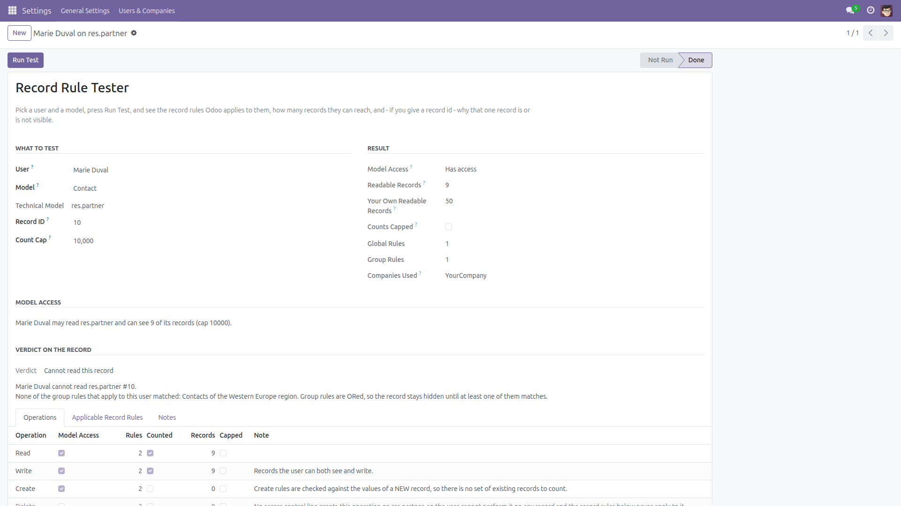
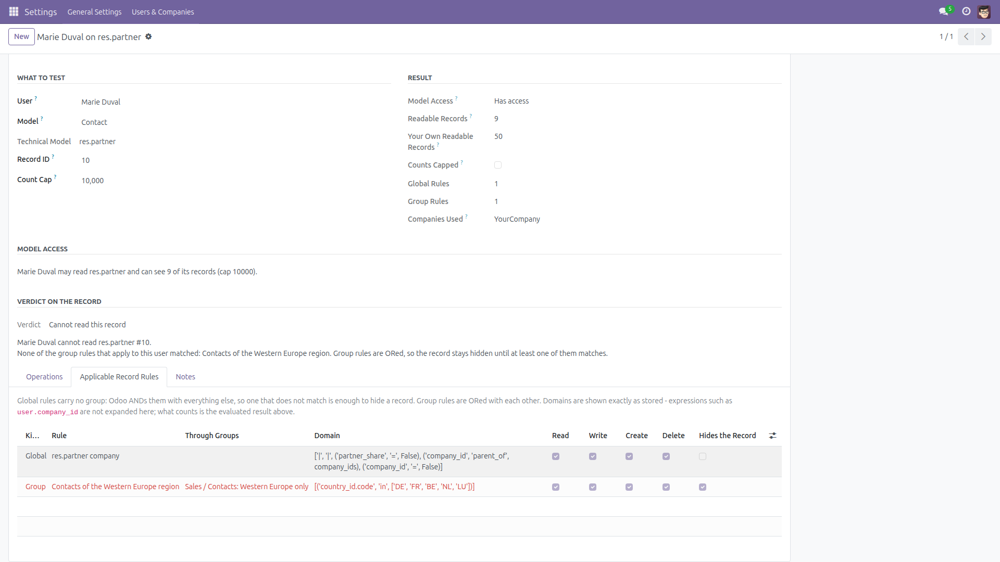
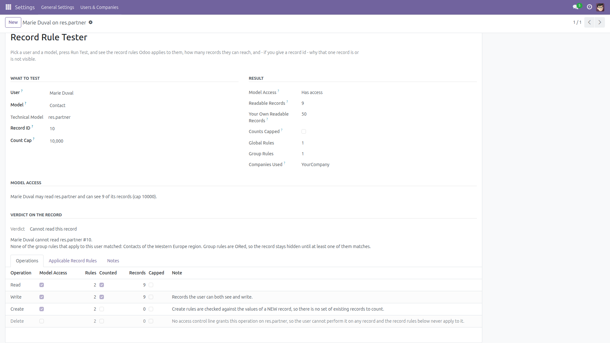
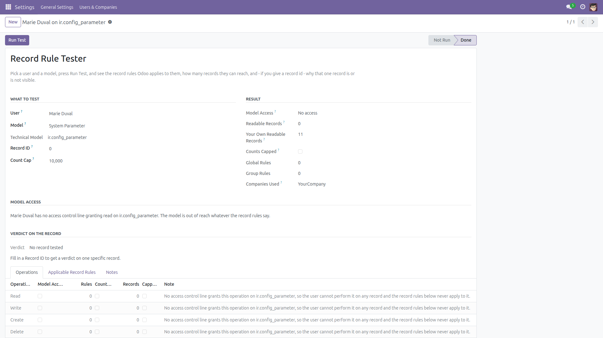
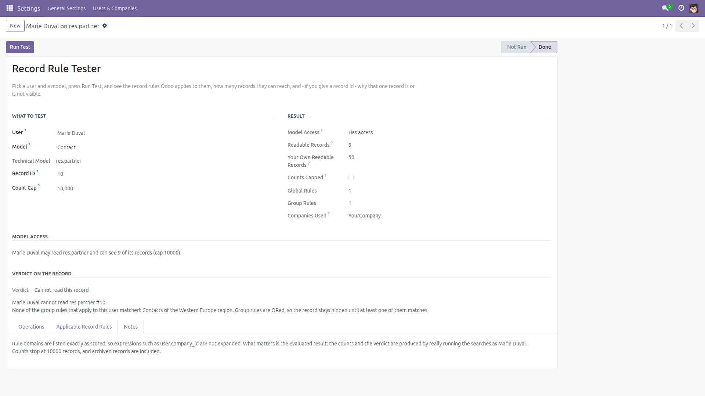

Which record rules apply to this user — and exactly why that record is hidden.
“Why can’t this user see that order?” is normally answered by opening Settings → Technical → Record Rules, reading a few domains full of user.company_id, and guessing.
This module answers it by asking the server. Pick a user, pick a model, press Run Test: the wizard runs the searches as that user, so every number comes out of Odoo’s own rule engine rather than a re-implementation of it. When you also give a record id, it tells you whether that user can read that exact record — and when they cannot, which rules exclude it, taken from ir.rule._get_failing(), the very routine Odoo uses to name rules in its own error messages.
Free and open source (LGPL-3), Odoo 14.0 through 19.0.
base only, no external Python library, no settings.sudo() around an access decision — the evaluation environment is built with superuser mode explicitly off, so what you are shown is what Odoo would really do to that user. It never displays the content of a record either: you get counts, rule names, rule domains and a yes/no verdict, never field values.
Both the wizard and its two result models are restricted to Settings administrators (base.group_system) in ir.model.access.csv, and the Run Test method checks that group a second time before it does anything.
Honest limitations.
Domains are shown exactly as stored — user.company_id and friends are not expanded into values. What the user really ends up seeing is the evaluated result: the counts and the verdict, which are produced by really running the searches. The screen repeats that where it matters.
Counts stop at a cap (10 000 by default, adjustable from 1 up to 200 000). A count that reached the cap is flagged as capped, so it reads as “this many or more”, never as an exact total.
The Write and Delete counts are records the user can both see and write/delete: a search always applies the read rules on top of the operation’s own rules. Create has no count at all — create rules validate the values of a new record, they do not filter existing ones — and the screen says so instead of showing a meaningless zero.
Rules inherited through _inherits (say product.product reaching product.template) are applied by the server but are not listed here; a note tells you to run the test again on the parent model.
Field-level access (groups= on a field), menu visibility and button-level checks are out of scope — this is about record rules and model access.
Counts are taken with archived records included and with every company the tested user may access enabled.
Testing the superuser reports what an ordinary user with the same groups would see; in real operation the superuser bypasses rules entirely, and a note on the screen says so.
Finally, the “no such record” answer comes from a plain lookup on the table, so the tester can tell an administrator that a record id exists even when their own record rules hide it — it never shows that record’s content, and this is one of the reasons the whole tool is limited to Settings administrators.

Who was tested, on which model, how many records they can reach compared with you — and why that one record is hidden.

Every record rule Odoo applies to this user on this model, global and group separated, with the one that hides the record flagged in red.

Read, write, create and delete: model access, the number of rules that apply, and how many records the user can reach.

A model no access control line grants: the tester says so plainly instead of raising an error.

The tester states what its figures do and do not cover instead of leaving you to guess.
record_rule_tester folder into your addons path (or install it from the Apps store).base.res.partner rather than Contact), switch on the developer mode — the tester shows both either way.res.partner)._inherits).Identical features on every supported series (14.0 – 19.0). The module adapts to the API each series ships: check_access_rights() on 14.0 – 17.0 and has_access() on 18.0 / 19.0 for model access, and the user’s group set read from groups_id on 14.0 – 18.0 or all_group_ids on 19.0, so implied groups are always taken into account.
Questions, bugs or feature requests?
Email f.ashraf.dev1@gmail.com — I read and answer every message.
License: LGPL-3 · Source on GitHub · Issues and contributions welcome.